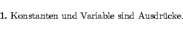
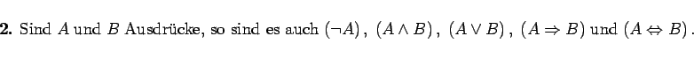

Mit diesen einstelligen (Negation) und zweistelligen (Konjunktion, Disjunktion, Implikation und Äquivalenz) Verknüpfungen können aus gegebenen Aussagenvariablen kompliziertere Ausdrücke der Aussagenlogik aufgebaut werden. Diese Ausdrücke werden induktiv definiert:
|  | (5.6) |
|  | (5.7) |
Zur Vereinfachung der Schreibweise solcher Ausdrücke werden Außenklammern weggelassen und Vorrangregeln (Prioritäten) festgelegt. In der folgenden Reihenfolge bindet jeder Junktor stärker als der folgende: